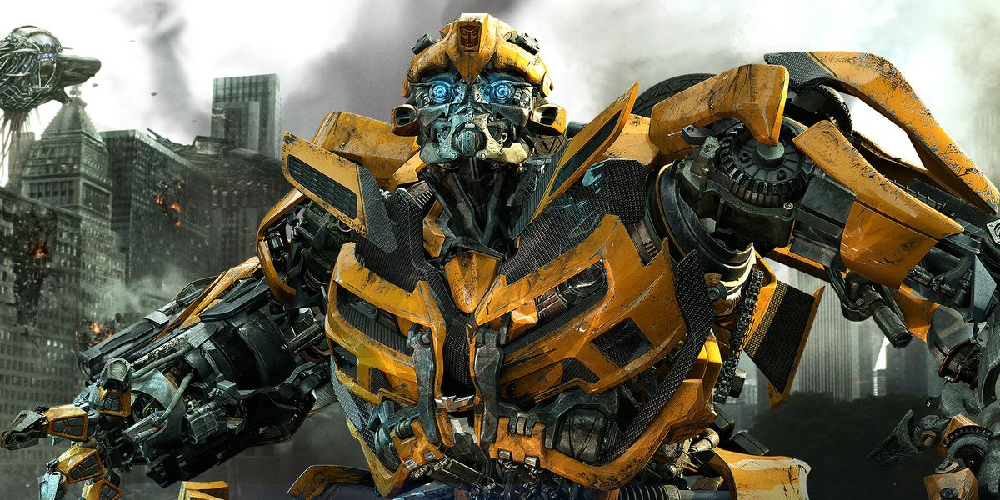
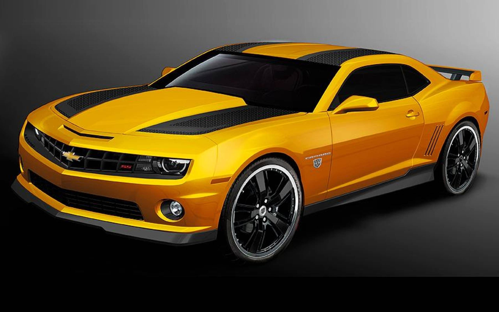

Bumblebee là một trong những trung úy đáng tin cậy nhất của Optimus Prime. Mặc dù anh ta không phải là người mạnh nhất hay quyền lực nhất trong số các Autobots, nhưng Bumblebee bù đắp cho điều này bằng một nguồn may mắn, quyết tâm và lòng dũng cảm không đáy. Anh sẵn sàng hy sinh mạng sống của mình để bảo vệ những người khác và ngăn chặn Decepticons . Bị hư hại nặng trong trận chiến, Bumblebee mất khả năng nói bằng lời nói, mặc dù anh ta vẫn có thể giao tiếp qua các tần số giữa các Autobot (theo kiểu có vẻ hơi giống với tin nhắn tức thời, một phương tiện tương tác có thể sử dụng được nhưng xa hơn và ít cá nhân hơn). Anh ấy cũng có thể giao tiếp với các đồng minh con người của Autobots và bạn của anh ấy, Sam Witwicky , bằng cách phát các đoạn âm thanh từ phương tiện phổ biến trên đài của anh ấy. Mặc dù có những hình thức giao tiếp ổn định này, nhưng Bumblebee không mong gì hơn là cuối cùng sẽ lấy lại được giọng nói của mình vào một ngày nào đó.

Khi các trận chiến trên Trái đất diễn ra ác liệt và nhiều người bạn cũ của họ đã thiệt mạng trong cuộc chiến, Bumblebee nhận thấy mình buộc phải đảm nhận vai trò lãnh đạo Autobot bất cứ khi nào Optimus không có mặt. Thời gian lãnh đạo này không thực sự diễn ra suôn sẻ, vì không chỉ hầu như không có bất kỳ Autobot nào còn sống sót để lãnh đạo, mà không nhiều người trong số họ tôn trọng quyền lực của anh ta. Bumblebee đang cố gắng hết sức, nhưng anh ta cho thấy tất cả các dấu hiệu của một 'bot trẻ bị buộc phải trưởng thành quá nhanh, với sự bốc đồng của anh ta đôi khi mang lại cho các Autobot nhiều rắc rối như đối thủ của họ.

Anh ấy sớm tham gia Soundwave và Barricade để tập hợp các Autobot khác. Brains và Wheelie đã ngăn chặn các Decepticons tiếp tục hành quyết các tù nhân của họ bằng cách kiểm soát một chiếc máy bay chiến đấu của Decepticon và thả các chiến binh xuống chiến trường. Shockwave rút lui xa hơn cùng với Barricade và một số Decepticons khác, nhưng những người lính loài người đã đặt bẫy và bắn vào họ. Khuôn mặt của Shockwave bị che khuất bởi một trong những chiếc dù của họ, và mắt của anh ta sau đó bị Wreckers bắn ra, khiến nó bị treo lủng lẳng bởi dây của nó. Sau đó, anh ta cố gắng trốn thoát, nhưng Optimus Prime đã quay trở lại trận chiến, và khi Shockwave bắn vào anh ta, Autobot đã né được phát súng, đeo một bộ gai đốt ngón tay ., và đấm Shockwave mạnh đến nỗi một phần bụng của anh ta vỡ tan. Ngay cả điều này cũng không khiến Shockwave gục ngã, nhưng Prime vẫn không bỏ cuộc - anh ta đấm Shockwave một lần nữa, đè Decepticon xuống và xé toạc con mắt lủng lẳng của hắn qua cổ họng, cuối cùng giết chết Decepticon khát máu. Optimus sau đó đã sử dụng pháo của Shockwave để bắn phá trụ điều khiển được thiết lập trong thành phố.
Khi Bumblebee trở về nhà Witwicky vào ngày hôm sau, Sam kinh hoàng chạy trốn khỏi thứ mà anh ta gọi là "Satan's Camaro", chỉ để rồi bị tấn công bởi Decepticon Barricade , kẻ cũng đang theo dấu vết của AllSpark. Trong khi chạy trốn khỏi mối đe dọa mới này, Sam tình cờ gặp Mikaela, và Bumblebee sau đó đã tóm lấy cặp đôi và đuổi họ đi, với sự truy đuổi gắt gao của Rào cản. Ẩn náu tại một nhà máy hóa chất bỏ hoang, Bumblebee tiết lộ hình dạng người máy của mình cho hai người để anh ta có thể giao chiến với Barricade, cuối cùng hạ gục Decepticon sau một cuộc ẩu đả. Sau đó, Bumblebee—chỉ có thể giao tiếp bằng âm thanh được phát qua radio của mình—tự giới thiệu bản thân với Sam và Mikaela một cách đàng hoàng, rồi chở họ đến Đài quan sát Griffith gần đó.để xem các Autobots khác mà anh ta đã gọi đến trên bầu trời. Trên đường đi, khi Mikaela lớn tiếng thắc mắc tại sao một người máy siêu tân tiến lại trở thành một "chiếc Camaro tồi tàn", một Bumblebee bị xúc phạm nhẹ đã quét một chiếc Camaro 2009 đang đi ngang qua, tự mình mang hình dáng bóng bẩy và bóng bẩy của nó.